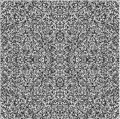

Класс Точечное изображение ( Tbitmap )]
Это специальный класс, с помощью которого можно хранить, загружать из файла, или буфера обмена Windows, сохранять в файле или буфере обмена графические точечные изображения в формате битовой карты (расширение .bmp)
Анимация.
Чтобы изобразить движение, можно использовать несколько способов.
Один из них – изображение рисунка, стирание его, изображение со смещением. Чтобы стереть рисунок, созданный с помощью пера, можно воспользоваться режимом pmNotXor.
Логические операции с цветом
Обычный режим рисования предполагает, что цвет рисунка соответствует цвету
рисующего инструмента - в какую краску макнули перо или кисть, такой цвет и
увидим. Существуют и специальные режимы рисования, при которых цвет
инструмента взаимодействует с цветом фона, подобно тому, как синий карандаш
на желтом фоне оставляет зеленый след. Сейчас речь пойдет о применяемых к
цветовым кодам операциях, которые позволяют получать удивительные эффекты,
вплоть до полного стирания изображения. Такие возможности позволяют
экономить не только память, но и время, что важно, например, при написании
программ анимации.
Значение двоичного разряда 1 можно трактовать как true, а 0 - как false, и
тогда над двоичными кодами можно производить логические операции, применяя
их к каждому двоичному разряду. Эта идея реализована в специальных режимах
рисования. Свойство Mode (режим) пера Pen (из набора средств рисования
Canvas) предусматривает различные логические операции над битами цветового
кода фонового изображения и битами цветового кода изображения, рисуемого
пером. Здесь мы рассмотрим лишь одну из таких операций, с остальными можно
познакомиться в оперативной справке системы Delphi.
Режим пера pmNotXor
В табл. 10.1 показаны результаты некоторых логических операций над логическими операндами а , b и с = NOT (a XOR b), принимающими одно из двух возможных значений 1 (true) и 0 (false).
Табл. 10.1. Результаты логических операций над операндами
|
a |
B |
a XOR b |
c=NOT (a XOR b) |
a XOR c |
NOT (a XOR c) |
|
0 |
0 |
0 |
1 |
1 |
0 |
|
0 |
1 |
1 |
0 |
0 |
1 |
|
1 |
0 |
1 |
0 |
1 |
0 |
|
1 |
1 |
0 |
1 |
0 |
1 |
Поскольку таблица охватывает все возможные комбинации значений a и b, то на основе этой таблицы делаем
следующие выводы. Разовое применение составной логической операции NOT (a XOR b) в случае а
= 1 не меняет значение b, а в случае а =
0 меняет значение b на противоположное. Повторное
применение этой же операции: NOT(a XOR (NOT (a XOR b))) восстанавливает значение b независимо от значения а.
Таким образом, побитовое использование этой операции - ей соответствует
режим пера pmNotXor - приводит к любопытным цветовым эффектам. Предположим,
в переменной А типа TСolor содержится код синего цвета -А: 11111111 00000000 00000000 , а в переменной В того же типа - код красного цвета: В:
00000000 00000000 11111111.
Результат операции NOT (А XOR В) дает код зеленого цвета:
С= NOT (А XOR В)
: 00000000 11111111 00000000,
повторное же взаимодействие кода А с полученным
результатом опять возвращает код красного цвета: NOT (А XOR С): 00000000 00000000 11111111.
Эта чудесная возможность позволяет создавать динамически изменяющиеся
цветные изображения, не беспокоясь о сохранении и восстановлении
закрываемого этим изображением фона. Достаточно в режиме пера pmNotXor
дважды нарисовать изображение в одном и том же месте. Первый раз оно
появится, второй раз - исчезнет, не оставив и следа!
Следующий эксперимент демонстрирует анимационные эффекты, основанные на
этой технике рисования.
Эксперимент 1
. Создадим новый проект. В форме поместим кнопку Button1, в заголовке
которой напишем ПУСК. При щелчке на кнопке в форме появится изображение
планеты с вращающимся вокруг нее спутником. Планета отбрасывает цветную
сине-зеленую тень. При входе в эту тень спутник меняет свою окраску.
procedure TForm1.Button1Click(Sender:TObject);
const
N=3; // количество оборотов
// спутника
dt=2*pi/1000; // приращение угла
// поворота
r=120; // радиус орбиты
rp=100; // радиус планеты
rc=7; // радиус спутника
xp=200; // координаты центра планеты
yp=150;
var
t:real; // угол поворота
xc,yc:integer; //координаты центра
// спутника begin
with Form1.Canvas do
begin
Brush.Color:=RGB(0,255,0);
FillRect(Rect(xp,yp-rp,Form1.Width,
yp+rp)); // Рисуем зеленую тень.
Brush.Color:=clBlue;
FillRect(Rect(xp,yp-rp div
2,Form1.Width,yp+rp div 2));
// Рисуем синюю тень.
Brush.Color:=RGB(10,50,150);
Pen.Mode:=pmCopy; // Устанавливаем
// обычный режим рисования.
Pen.Color:=clBlue; // Цвет контура
// планеты - синий.
Pen.Width:=1;
Ellipse(xp - rp,yp - rp,xp+rp,yp+rp);
// Рисуем планету.
Pen.Color:=clRed; // Устанавливаем
// параметры для рисования спутника.
Pen.Width:=2*rc;
Pen.Mode:=pmNotXor; // Устанавливаем
// режим пера pmNotXor.
t:=pi;
while t<2*pi*N+pi do // Цикл движения
// спутника по орбите.
begin
t:=t+dt;
xc:=xp+round(r*cos(t));
// Рассчитываем текущие координаты
// спутника.
yc:=yp+round(r*sin(t));
Ellipse(xc - rc,yc - rc,xc+rc,yc+rc);
// Первый раз рисуем спутник.
Sleep(10); // Пауза 10 миллисекунд.
Ellipse(xc - rc,yc - rc,xc+rc,yc+rc);
// Рисуем второй раз, и,
// благодаря режиму pmNotXor, тем
// самым затираем изображение.
end ;
end ;
end ;
Другие возможности взаимодействия цвета изображения и фона реализованы в свойстве CopyMode набора средств рисования Canvas
Рисуем в форме
В следующем эксперименте мы воспользуемся описанной выше побайтовой структурой цветового кода для рисования в компоненте Image1.
Эксперимент 1.
Разместим в форме компонент Image1 (с вкладки Additional)
и установим его размеры Width: 201; Height: 201. Добавим кнопку Button1, в
заголовке которой напишем: "Рисуем в Image1". При щелчке на этой кнопке
произойдет попиксельная закраска изображения Image1 в виде
некоторого узора.
Нам понадобится вспомогательная функция CLR, специальным образом
вычисляющая цвет пиксела. Приведенный ниже код функции CLR следует
разместить после строки {$R *.DFM} в модуле Unit1.
function CLR(n,k:integer):TColor;
var
g:byte;
begin
g:=1+n mod 15;
case k of
0: CLR:=$001111*g;
1: CLR:=$000011*g;
2: CLR:=$001100*g;
3: CLR:=$110000*g;
4: CLR:=$110011*g;
5: CLR:=$111100*g;
6: CLR:=$111111*g;
end ;
end ;
Локальная переменная g стандартного типа byte (беззнаковое целое в диапазоне от 0 до 255) используется здесь для задания интенсивности соответствующего цветового оттенка. Целочисленные формальные параметры n и k регулируют выбор цвета. Нам в дальнейшем понадобится также глобальная переменная k, описание которой нужно разместить перед описанием функции CLR:
var k: integer = -1;
Ниже приводится текст процедуры-реакции на щелчок на кнопке Button1.
procedure TForm1.Button1Click(Sender:TObject);
var
i,j,io: integer;
c: TColor;
Tick: Cardinal;
begin
Tick:= GetTickCount;
inc(k);
k:=k mod 7;
io:= Image1.Height div 2;
for i:=0 to io do
begin
for j:=0 to io do
begin
c:=CLR(i*j+random(11), k);
Image1.Canvas.Pixels[io+i, io+j]:=c;
Image1.Canvas.Pixels[io-i, io+j]:=c;
Image1.Canvas.Pixels[io+i, io-j]:=c;
Image1.Canvas.Pixels[io-i, io-j]:=c;
end ;
Application.ProcessMessages;
end ;
Caption:=IntToStr(GetTickCount -Tick);
end ;
В этой процедуре происходит закраска пикселов, расположенных симметрично относительно горизонтальной и вертикальной осей симметрии квадратной области Image1 специально выбираемым цветом. При расчете цвета для большей художественности изображения использована небольшая "размывка" цветового кода с помощью датчика случайных чисел random. Для качественной работы этого датчика в конце программы (перед end. с точкой) следует добавить новый раздел:
initialization
randomize;
Для контроля времени исполнения в процедуре вызывается стандартная функция
GetTickCount (ее описание приводится в главе 8).
Многократно щелкая на кнопке Button1, можно получать разнообразные
орнаменты. На рис. 10.1 показан один из таких удивительных узоров. К
сожалению, рисунок черно-белый, но на экране своего монитора вы увидите
нечто гораздо более впечатляющее. Испытайте другие настройки цветовых
оттенков, добавив, например, в перечень цветовых кодов функции CLR числа
$00BFFF, $711100 и прочие.

Рис. 10.1.
Рисунок, полученный с помощью попиксельной закраски
Основное замечание по этой программе: прорисовка изображения происходит с некоторым замедлением. На компьютере Pentium-100 область Image1 прорисовывается около 6 секунд. На более мощных компьютерах эффект замедления также проявится, если увеличить размеры Image1. С более скоростной техникой рисования растровых изображений мы познакомимся в двух следующих экспериментах.
Рисуем в оперативной памяти
Котлеты можно приготовить в домашних условиях, а можно воспользоваться уже
имеющимися полуфабрикатами. Точно так же в форму можно загрузить уже
готовое изображение, которое мы предварительно нарисуем в памяти. Как и в
случае с котлетами, это будет быстрее.
Эксперимент 2
. Добавим в форму кнопку Button2, в заголовке которой напишем: "Используем
память". В Delphi имеется специальный класс растровых изображений TBitmap,
которые можно формировать непосредственно в оперативной памяти компьютера.
Целиком сформированное в памяти изображение гораздо быстрее переносится в
форму, чем попиксельное рисование в самой форме. Реакция на щелчок на
кнопке Button2 описана в следующей процедуре.
procedure TForm1.Button2Click(Sender:TObject);
var
i,j,io: integer;
c: TColor;
Btm: TBitmap;
Tick: Cardinal;
begin
Tick:= GetTickCount;
Btm:=TBitmap.Create;
Btm.Height:=Image1.Height;
Btm.Width:=Image1.Width;
inc(k);
k:=k mod 7;
io:= Btm.Height div 2;
for i:=0 to io do
begin
for j:=0 to io do
begin
c:=CLR (i*j+random(11), k);
Btm.Canvas.Pixels[io+i, io+j]:=c;
Btm.Canvas.Pixels[io-i, io+j]:=c;
Btm.Canvas.Pixels[io+i, io-j]:=c;
Btm.Canvas.Pixels[io-i, io-j]:=c;
end ;
end ;
Image1.Picture.Bitmap.Assign(Btm);
Btm.Free;
Caption:=IntToStr(GetTickCount -Tick);
end ;
В этой процедуре происходит почти то же самое, что и ранее, однако пикселы закрашиваются не в компоненте Image1, а в битовой карте с придуманным нами именем Btm. Карта Btm типа TBitmap располагается в памяти компьютера. В начале работы процедуры после вызова конструктора Btm:=TBitmap.Create для этой карты выделяется оперативная память. Ее нужно освободить в конце работы процедуры: Btm.Free. Копирование изображения из оперативной памяти в компонент Image1 происходит при вызове метода Assign (назначить):
Image1.Picture.Bitmap.Assign(Btm);
Время исполнения этой процедуры по сравнению с процедурой TForm1.Button1Click сокращается примерно в 5 раз и на компьютере Pentium 100 составляет около одной секунды.
Функция ScanLine
Наиболее скоростным средством при обращении с растровыми изображениями
является функция ScanLine. Она просматривает строку битовой карты. Если
каждый пиксел такой строки представить в виде совокупности трех
"вагончиков" - байтов - на красную, зеленую и синюю составляющую цвета по
одному "вагончику", то функция ScanLine помогает сформировать из этих
"вагончиков" целый "поезд". Манипулировать же целыми "поездами" оказывается
гораздо быстрее, чем отдельными "вагончиками".
Эксперимент 3
. Добавим в форму кнопку Button3 и напишем в ее заголовке ScanLine.
Обработчик щелчка мышью на этой кнопке приводится ниже.
procedure TForm1.Button3Click(Sender:TObject);
var
i,j,io: integer;
c: TColor;
Bmp: TBitmap;
Line1,Line2: pByteArray;
Tick: Cardinal;
begin
Tick:= GetTickCount;
Bmp:=Image1.Picture.Bitmap;
Bmp.PixelFormat:=pf24bit;
Bmp.Width:=Image1.Width;
Bmp.Height:=Image1.Height;
inc(k);
k:=k mod 7;
io:= Bmp.Height div 2;
for i:=0 to io do
begin
if odd(Bmp.Height) then
Line1:=PByteArray(Bmp.ScanLine[io+i])
else Line1:=PByteArray
(Bmp.ScanLine[io+i-1]);
Line2:=PByteArray(Bmp.ScanLine[io-i]);
for j:=0 to io do
begin
c:=CLR (i*j+random(11), k);
Line1[(io+j)*3]:=GetBValue(c);
Line1[(io-j)*3]:=GetBValue(c);
Line2[(io+j)*3]:=GetBValue(c);
Line2[(io-j)*3]:=GetBValue(c);
Line1[(io+j)*3+1]:=GetGValue(c);
Line1[(io-j)*3+1]:=GetGValue(c);
Line2[(io+j)*3+1]:=GetGValue(c);
Line2[(io-j)*3+1]:=GetGValue(c);
Line1[(io+j)*3+2]:=GetRValue(c);
Line1[(io-j)*3+2]:=GetRValue(c);
Line2[(io+j)*3+2]:=GetRValue(c);
Line2[(io-j)*3+2]:=GetRValue(c);
end ;
end ;
Image1.Invalidate;
Caption:=IntToStr(GetTickCount-Tick);
end ;
К этой программе необходим комментарий. В разделе локальных переменных наряду с объектами, которые описывались в предыдущих процедурах, добавлены переменные Line1, Line2 - это имена двух "поездов", составленных из байтов с кодами красного, зеленого и синего цвета. Переменные Line и Line2 имеют специальный тип pByteArray. Его можно расшифровать следующим образом: Byte Array - это массив байтов, р - первая буква служебного слова pointer - указатель. Об указателях более подробно речь будет вестись в гл. 12. В строке Bmp:=Image1.Picture.Bitmap создается копия указателя на битовую карту изображения Image1. Далее оператор Bmp.PixelFormat:=pf24bit устанавливает, что каждый из трех основных цветов будет выражаться кодом из 8 бит. Конструкция вида
Line1:=PByteArray(Bmp.ScanLine[n])
формирует ссылку на байтовый массив n-ой строки пикселов битовой карты с указателем Bmp. Стандартные функции GetBValue, GetGValue, GetBValue извлекают коды синей, зеленой и красной составляющей цвета. Эти коды размещаются в три соседних "вагончика", для чего используется специальная индексация "вагончиков", например:
- Line1[(io+j)*3] - первый вагончик триады;
- Line1[(io+j)*3+1] - второй вагончик триады;
- Line1[(io+j)*3+2] - третий вагончик триады.
Обязательной командой при работе с функцией ScanLine должна быть
перерисовка сформированного в оперативной памяти изображения в компонент
Image1: Image1.Invalidate;
Несмотря на то что количество строк в процедуреTForm1.Button3Click по сравнению с TForm1.Button1Click увеличилось чуть ли не вдвое, время ее
исполнения сокращается в фантастическое количество раз. Теперь для закраски
все того же поля Image1 требуется всего-навсего 30 миллисекунд!